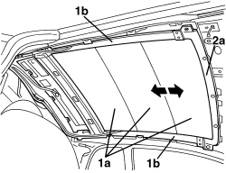

7030L21 SUN BLIND ASSEMBLY - ALIGNMENT
- Path
- Procedures > 70 FITTINGS > 7030 SUN ROOF/GLASS PANEL > 7030L TRANSPARENT ROOF PANEL > 7030L21 SUN BLIND ASSEMBLY - ALIGNMENT
- Kind
- repair procedure (removal / refitting; the operation number is the code)
- Applies to
- all engines; all production periods
- Interactive page
- https://sloeber94.github.io/elrnDB-aBrrSpdr/en/#/946002582
Applies to: all engines; all production periods
 Removing
Removing
 Refitting
Refitting- Remove the rear parcel shelf.
Op. 7040G30 BOOT LIGHT BULB HOLDER - R.R.
- Work on both sides of the vehicle.
Op. 7050A22 REAR SEAT CUSHION - R+R
Op. 7040H42 REAR PILLAR TRIM (ONE), LEFT OR RIGHT- R.R
Op. 7040H38 CENTRE PILLAR UPPER ELEMENT (ONE), LEFT OR RIGHT - R.R
Op. 7040H30 FRONT PILLAR TRIM (ONE), LEFT OR RIGHT - R.R.
Op. 7065C34 SUN BLIND (ONE), LEFT OR RIGHT - R.R.
Op. 7040E40 FRONT COURTESY LIGHT - R.R.
Op. 7065C60 INTERIOR REAR VIEW MIRROR FOR VERSIONS WITH RAIN/DUSK SENSOR - R.R.
Or, alternatively.
Op. 7065C68 INTERIOR REAR VIEW MIRROR - R+R
Op. 7005A34 FRONT SIDE DOOR COMPARTMENT SEAL - R.R
Op. 7030L12 TRANSPARENT ROOF PANEL COVER - R.R.
Op. 7030L24 SLIDING BLIND MOVEMENT MOTOR - R.R.
1. Carry out blind (1a) sliding tests on the sliding guides (1b) manually.
2. Align the blind (1a) placing it manually in the end of travel position on the front crossmember (2a), then refit the motor in these conditions.
Op. 7030L24 SLIDING BLIND MOVEMENT MOTOR - R.R.

Applies to: all engines; all production periods
Refitting
RemovingOp. 7030L12 TRANSPARENT ROOF PANEL COVER - R.R.
Op. 7005A34 FRONT SIDE DOOR COMPARTMENT SEAL - R.R
Op. 7065C68 INTERIOR REAR VIEW MIRROR - R+R
Op. 7065C60 INTERIOR REAR VIEW MIRROR FOR VERSIONS WITH RAIN/DUSK SENSOR - R.R.
Op. 7040E40 FRONT COURTESY LIGHT - R.R.
Op. 7065C34 SUN BLIND (ONE), LEFT OR RIGHT - R.R.
Op. 7040H30 FRONT PILLAR TRIM (ONE), LEFT OR RIGHT - R.R.
Op. 7040H38 CENTRE PILLAR UPPER ELEMENT (ONE), LEFT OR RIGHT - R.R
Op. 7040H42 REAR PILLAR TRIM (ONE), LEFT OR RIGHT- R.R
Topics linked from this page (12)
- 7005A34 FRONT SIDE DOOR COMPARTMENT SEAL - R.R
- 7030L12 TRANSPARENT ROOF PANEL COVER - R.R.
- 7030L24 SLIDING BLIND MOVEMENT MOTOR - R.R.
- 7040E40 FRONT COURTESY LIGHT - R.R.
- 7040G30 BOOT LIGHT BULB HOLDER - R.R.
- 7040H30 FRONT PILLAR TRIM (ONE), LEFT OR RIGHT - R.R.
- 7040H38 CENTRE PILLAR UPPER ELEMENT (ONE), LEFT OR RIGHT - R.R
- 7040H42 REAR PILLAR TRIM (ONE), LEFT OR RIGHT- R.R
- 7050A22 REAR SEAT CUSHION - R+R
- 7065C34 SUN BLIND (ONE), LEFT OR RIGHT - R.R.
- 7065C60 INTERIOR REAR VIEW MIRROR FOR VERSIONS WITH RAIN/DUSK SENSOR - R.R.
- 7065C68 INTERIOR REAR VIEW MIRROR - R+R